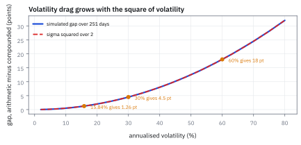
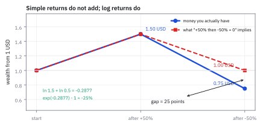

25.1 Excess Returns, Log Returns, and the Numeraire
ผลตอบแทนที่ป้อนเข้าแบบจำลองความเสี่ยงต้องนับปันผล หักดอกเบี้ยที่เงินสดได้ในช่วงเดียวกัน และวัดเป็นดอลลาร์ ส่วนการรวมหลายวันใช้การทบต้น ซึ่ง log return เปลี่ยนให้เป็นการบวก
กองทุนแบบ market-neutral หากำไรจากการเลือกหุ้น ไม่ได้หากำไรจากการเดาว่าตลาดทั้งตลาดจะขึ้นหรือลง วิธีของมันคือซื้อหุ้นที่คิดว่าจะดีกว่าตลาด เรียกว่าฝั่ง long แล้ว short หุ้นอีกกลุ่มด้วยเงินเท่ากัน การ short คือยืมหุ้นของคนอื่นมาขายก่อน แล้วซื้อคืนไปคืนทีหลัง คนที่ short จึงได้กำไรเมื่อราคาลง และขาดทุนเมื่อราคาขึ้น ถ้าตลาดขึ้นทั้งตลาด สองฝั่งจะหักกันเอง สิ่งที่เหลือคือฝีมือเลือกหุ้น
กองทุนหนึ่งปิดปีด้วยตัวเลขเหล่านี้:
- ทุนของกองทุน (เงินของผู้ลงทุน) $A=\$200$ ล้าน
- ฝั่ง long: ซื้อหุ้นไว้ \$300 ล้าน หุ้นกลุ่มนี้ขึ้น 11.0% ในปีนี้
- ฝั่ง short: short ตะกร้าหุ้นไว้ \$300 ล้าน ตะกร้านี้ขึ้น 6.0% ในปีนี้
- SOFR เฉลี่ยทั้งปี 4.8% SOFR คืออัตราดอกเบี้ยข้ามคืนของเงินดอลลาร์ หน้านี้ใช้เป็นดอกเบี้ยที่เงินสดได้ถ้าฝากไว้เฉย ๆ
รายงานประจำปีเขียนว่ากองทุนทำได้ 12.3% (หน้านี้จะคำนวณตัวเลขนี้ให้ดูทีละขั้น) ผู้ลงทุนคนหนึ่งเอาไปเทียบกับดอกเบี้ยเงินฝาก ได้ $12.3\%/4.8\%=2.56$ แล้วบอกว่า “ชนะเงินฝากสองเท่าครึ่ง”
ฝีมือเลือกหุ้นจริง ๆ ของกองทุนนี้คือกี่ % และถ้าปีหน้า SOFR เป็น 6.0% โดยหุ้นขยับเท่าเดิม รายงานจะเขียนว่าเท่าไร?
ลองตอบก่อนเปิดเฉลย
กองทุนยังถือเงินสดครบ \$200 ล้าน เพราะเงิน \$300 ล้านที่ได้จากการขายหุ้นฝั่ง short ถูกใช้จ่ายค่าหุ้นฝั่ง long \$300 ล้านไปพอดี เงินสดก้อนนี้ได้ดอกเบี้ย 4.8% ซึ่งผู้ลงทุนได้เองอยู่แล้วถ้าฝากเงิน ส่วนที่เหลือจึงเป็นฝีมือ:
ปีหน้ารายงานจะเขียน 13.5% ทั้งที่ฝีมือยังเป็น 7.5% เท่าเดิม ตัวเลขที่วัดฝีมือเรียกว่า excess return คือผลตอบแทนที่ได้เกินดอกเบี้ยเงินฝาก ส่วนต่างระหว่างตัวเลข % สองตัวในหน้านี้เรียกว่า “จุด” (percentage point) เช่น 12.3% กับ 7.5% ห่างกัน 4.8 จุด
excess return ของกองทุนนี้ไม่ขยับตาม SOFR เลย เพราะเงินฝั่ง long เท่ากับฝั่ง short แต่ถ้าพอร์ตเอียง เช่น long \$350 ล้าน short \$250 ล้าน excess return จะลดลงครึ่งจุดทุกครั้งที่ SOFR ขึ้นหนึ่งจุด หน้านี้จะแสดงที่มาของ “ครึ่งจุด” นี้ให้ดู
ภาพรวมก่อนลงสูตร
โจทย์ด้านบนแสดงว่าตัวเลข “ผลตอบแทน” ตัวเดียวมีของสองอย่างปนกันได้ อย่างแรกคือดอกเบี้ยที่เงินสดได้อยู่แล้ว อย่างที่สองคือกำไรจากการเลือกหุ้น แบบจำลองความเสี่ยงต้องการแค่อย่างที่สอง factor model ก็เช่นกัน (factor model คือแบบจำลองที่อธิบายผลตอบแทนของหุ้นหลายพันตัวด้วยปัจจัยร่วมไม่กี่ตัว เช่นตลาดทั้งตลาด หรือกลุ่มอุตสาหกรรม) ก่อนป้อนตัวเลขเข้าระบบ จึงต้องตกลงกันสี่เรื่อง:
- นับอะไร: นับทั้งราคาที่เปลี่ยนและปันผลที่ได้
- หักอะไร: หักดอกเบี้ยที่เงินสดได้ในช่วงเวลาเดียวกัน ส่วนที่เหลือคือ excess return
- วัดเป็นเงินสกุลไหน: สกุลเงินที่ใช้วัดทุกอย่างเรียกว่า numeraire เล่มนี้ใช้ดอลลาร์
- รวมหลายวันอย่างไร: ทบต้น คือคูณกัน ไม่ใช่บวกกัน
เรื่องสุดท้ายมีเครื่องมือช่วย คือ log return $\tilde r=\ln(1+r)$ เมื่อ $r$ คือผลตอบแทนธรรมดา log เปลี่ยนการคูณให้เป็นการบวก ผลรวมของ log return จึงบอกเงินจริงได้พอดี แต่ผลรวมของผลตอบแทนธรรมดาไม่ใช่เงินจริง และสูงกว่าผลรวมของ log return เสมอ หน้านี้จะพิสูจน์ว่าส่วนที่สูงกว่ามีขนาดเฉลี่ยราว $\sigma^2/2$ ต่องวด โดย $\sigma$ คือความผันผวนต่องวด (SD ของผลตอบแทน)
หน้านี้เดินตามลำดับนี้: ผลตอบแทนหนึ่งวันที่นับปันผล แล้ว PnL ของทั้งพอร์ตพร้อมเงินสด แล้ว excess return กับ NMV ซึ่งคุมว่าดอกเบี้ยรั่วเข้ามาเท่าไร แล้วดอกเบี้ยรายวันที่นับตามจำนวนคืน แล้วการทบต้นด้วย log return กับช่องว่าง $\sigma^2/2$ และปิดที่หุ้นต่างสกุลเงิน รูปด้านล่างคือคำตอบของโจทย์เปิดหน้าในภาพเดียว
รูป — 12.3% ที่รายงาน แยกเป็นดอกเบี้ยกับฝีมือ
ศัพท์ที่ใช้ในหัวข้อนี้
- Long และ short
- long คือซื้อหุ้นไว้ ได้กำไรเมื่อราคาขึ้น short คือยืมหุ้นของคนอื่นมาขายก่อน แล้วซื้อคืนไปคืนทีหลัง ได้กำไรเมื่อราคาลง ระหว่างที่ยืม คนที่ short ต้องจ่ายปันผลให้เจ้าของหุ้นแทนบริษัทด้วย
- Market-neutral
- พอร์ตที่ลงเงินฝั่ง long เท่ากับฝั่ง short เมื่อตลาดขึ้นหรือลงทั้งตลาด สองฝั่งจะหักกันเอง กำไรที่เหลือจึงมาจากการเลือกหุ้น
- PnL (profit and loss)
- กำไรหรือขาดทุนเป็นดอลลาร์ในช่วงเวลาหนึ่ง
- จุด (percentage point)
- ส่วนต่างระหว่างตัวเลข % สองตัว เช่น 12.3% กับ 7.5% ห่างกัน 4.8 จุด
- Dividend-adjusted return
- ผลตอบแทนที่นับทั้งราคาที่เปลี่ยนและปันผลที่ได้ในงวดนั้น ทุกการคำนวณเริ่มจากตัวนี้ เพราะผู้ถือหุ้นได้เงินทั้งสองก้อน
- Ex-dividend date
- วันแรกที่คนซื้อหุ้นไม่ได้ปันผลรอบนั้นแล้ว ราคาหุ้นวันนั้นจึงลดลงราวเท่าปันผล
- Excess return
- ผลตอบแทนลบดอกเบี้ยที่เงินสดได้ในช่วงเดียวกัน บอกว่าการลงทุนนี้ให้มากกว่าการฝากเงินเฉย ๆ เท่าไร factor model และแบบจำลองความเสี่ยงใช้ตัวนี้ทั้งหมด
- Net Market Value (NMV)
- เงินฝั่ง long ลบเงินฝั่ง short บอกว่าพอร์ตใช้เงินสดสุทธิไปเท่าไร หน้านี้จะแสดงว่า NMV คุมว่าระดับดอกเบี้ยรั่วเข้า excess return ของพอร์ตแค่ไหน
- SOFR และ Actual/360
- SOFR (Secured Overnight Financing Rate) คืออัตราดอกเบี้ยของการยืมเงินดอลลาร์ข้ามคืน โดยมีพันธบัตรรัฐบาลสหรัฐฯ เป็นหลักประกัน หน้านี้ใช้เป็นดอกเบี้ยของเงินสด Actual/360 คือกติกาของตลาดเงินดอลลาร์: ดอกเบี้ยเท่ากับอัตราต่อปี คูณจำนวนคืนจริง หารด้วย 360
- Log return
- $\ln(1+r)$ เมื่อ $r$ คือผลตอบแทนธรรมดา log return ของหลายงวดบวกกันได้ตรง ๆ เพราะ log ของผลคูณคือผลบวกของ log จึงใช้ทุกครั้งที่ต้องรวมหลายงวด
- Volatility drag
- ส่วนที่ค่าเฉลี่ยของผลตอบแทนธรรมดาสูงกว่าค่าเฉลี่ยของ log return มีขนาดราว $\sigma^2/2$ ต่องวด ผลคือเงินที่ขึ้นลงแรงโตช้ากว่าค่าเฉลี่ยที่รายงาน
- Numeraire
- สกุลเงินที่ใช้วัดทุกอย่าง เล่มนี้ใช้ดอลลาร์ หุ้นในสกุลอื่นต้องแปลงผลตอบแทนเป็นดอลลาร์ก่อนเข้าแบบจำลอง
- EURUSD
- ราคาของเงิน 1 ยูโรเมื่อวัดเป็นดอลลาร์ เช่น 1.0900 แปลว่า 1 ยูโรแลกได้ \$1.09
สัญลักษณ์และหน่วย
| สัญลักษณ์ | ความหมาย | หน่วย |
|---|---|---|
| $P_i(t),\ D_i(t)$ | ราคาปิดของหุ้น $i$ ในวัน $t$ และปันผลต่อหุ้นที่ได้ในวันนั้น | ดอลลาร์ต่อหุ้น |
| $r_i,\ r_f$ | ผลตอบแทนของหุ้น $i$ และดอกเบี้ยของเงินสดในงวดเดียวกัน | ทศนิยมต่องวด |
| $w_i,\ n_i$ | เงินที่ลงในหุ้น $i$ และจำนวนหุ้นที่ถือ ทั้งสองตัวติดลบเมื่อ short | ดอลลาร์ และหุ้น |
| $A,\ \mathrm{NMV}$ | ทุนของกองทุน และ NMV $=\sum_i w_i$ (เงินฝั่ง long ลบเงินฝั่ง short) | ดอลลาร์ |
| $\tilde r$ | log return $\ln(1+r)$ | ต่องวด |
| $T,\ \bar r,\ G$ | จำนวนงวด ค่าเฉลี่ยเลขคณิตของผลตอบแทน และค่าเฉลี่ยเรขาคณิต (อัตราทบต้นต่องวด) | งวด และทศนิยมต่องวด |
| $\mu,\ \sigma$ | ค่าเฉลี่ยและความผันผวน (SD) ของผลตอบแทนต่องวด | ทศนิยมต่องวด |
| $r_\ell,\ g$ | ผลตอบแทนของหุ้นในสกุลท้องถิ่น และผลตอบแทนของเงินท้องถิ่นเทียบดอลลาร์ | ทศนิยม |
| $r_f^{\$},\ r_f^{\rm EUR}$ | ดอกเบี้ยเงินฝากดอลลาร์ และดอกเบี้ยเงินฝากยูโร ในช่วงเดียวกัน | ทศนิยม |
ขั้นที่ 1 — ผลตอบแทนหนึ่งวันที่นับปันผล
ก่อนจะคิดผลตอบแทนของทั้งพอร์ต ต้องตกลงกันก่อนว่าผลตอบแทนของหุ้นตัวเดียวในหนึ่งวันคืออะไร นิยามคือ เงินที่ได้เพิ่มต่อเงินหนึ่งดอลลาร์ที่ลงไป เงินที่ได้เพิ่มมาได้สองทาง ทางแรกคือราคาที่ขึ้นลง ทางที่สองคือปันผลที่บริษัทจ่าย
ถ้านับแค่ราคา จะพลาดในวัน ex-dividend ซึ่งเป็นวันแรกที่คนซื้อหุ้นไม่ได้ปันผลรอบนั้นแล้ว ราคาวันนั้นจึงลดลงราวเท่าปันผล เงินก้อนนั้นไม่ได้หายไปไหน มันแค่ย้ายจากบริษัทมาเข้าบัญชีของผู้ถือหุ้น สูตรจึงต้องนับทั้งราคาและปันผล ตัวอย่าง (สมมติ) หุ้น $i$ ในวันอังคาร:
- ราคาปิดวันจันทร์ $P_i(t-1)=\$50.00$
- ราคาปิดวันอังคาร $P_i(t)=\$50.60$
- ปันผลที่ได้ในวันอังคาร $D_i(t)=\$0.25$ ต่อหุ้น
สูตรอ่านว่า มูลค่าตอนจบ (ราคาบวกปันผล) หารด้วยเงินที่ลงไป แล้วลบหนึ่ง ซึ่งก็คือกำไรหารด้วยเงินที่ลงไป $\big(P_i(t)+D_i(t)-P_i(t-1)\big)/P_i(t-1)$ ถ้าลืมปันผล ผลตอบแทนวันนี้หายไป $1.700\%-1.200\%=0.5$ จุด ซึ่งก็คือ $0.25/50=0.5\%$ ถ้าหุ้นจ่าย \$0.25 ทุกไตรมาส (ปีละสี่ครั้ง) ทั้งปีหายไป $4\times0.25/50=2\%$
ผลคือหุ้นที่จ่ายปันผลสูงจะดูแย่กว่าหุ้นที่ไม่จ่าย ทั้งที่ผู้ถือได้เงินเท่ากัน ฐานข้อมูลราคาส่วนใหญ่มีราคาสองแบบ คือราคาดิบ กับราคาที่ปรับปันผลแล้ว ต้องรู้เสมอว่ากำลังใช้แบบไหน
ขั้นที่ 2 — PnL ของพอร์ต และเงินสดที่เหลือ
กองทุนไม่ได้ถือหุ้นตัวเดียว แต่ถือหุ้นหลายตัวพร้อมกับเงินสด จึงต้องคิด PnL (กำไรหรือขาดทุนเป็นดอลลาร์) ของทั้งพอร์ต แล้วหักส่วนที่ได้จากการฝากเงินเฉย ๆ ออก ของที่ใช้มีดังนี้:
- $A$ คือทุนของกองทุน ตอนเริ่มเป็นเงินสดทั้งก้อน
- $w_i$ คือเงินที่ลงในหุ้น $i$ ติดลบเมื่อ short เช่น short \$300 ล้านคือ $w_i=-300$ ล้านดอลลาร์
- $n_i=w_i/P_i(0)$ คือจำนวนหุ้นที่ถือ ติดลบเมื่อ short โดย $P_i(0)$ คือราคาตอนเริ่มงวด ส่วน $P_i(1)$ และ $D_i(1)$ คือราคาและปันผลตอนจบงวด
- $r_f$ คือดอกเบี้ยของเงินสดในงวดเดียวกัน
เงินสดที่เหลือคือ $A-\sum_iw_i$ เพราะการซื้อหุ้นใช้เงินสดไป ส่วนการ short ($w_i$ ติดลบ) นำเงินสดเข้ามา เงินสดนี้ได้ดอกเบี้ย $r_f$ ถ้ามันติดลบ แปลว่ากองทุนยืมเงินมาและต้องจ่าย $r_f$ หน้านี้สมมติว่ายืมเงินและฝากเงินได้ที่อัตราเดียวกัน ขั้นสุดท้ายหักสิ่งที่ทุนทั้งก้อนจะได้ถ้าฝากเงินเฉย ๆ คือ $Ar_f$
PnL ของหุ้นแต่ละตัวคือจำนวนหุ้นคูณมูลค่าตอนจบ ลบเงินที่ลงไป เงินที่ลงไปคือ $n_iP_i(0)=w_i$ เมื่อดึงตัวร่วมนี้ออกมา สิ่งที่เหลือคือนิยามผลตอบแทนที่นับปันผลจากขั้นก่อนพอดี จึงได้ $w_ir_i$ สูตรนี้ใช้กับ short ได้ด้วย เพราะ $w_i$ ติดลบ: ราคาขึ้นทำให้คนที่ short ขาดทุน และคนที่ short ต้องจ่ายปันผลให้เจ้าของหุ้นที่ให้ยืมด้วย
ขั้นที่สำคัญคือการหัก $Ar_f$ ดอกเบี้ยของเงินสดหักกับ $Ar_f$ แล้วเหลือ $(A-\sum_iw_i)r_f-Ar_f=-\sum_iw_ir_f$ ก้อนนี้กระจายเข้าไปในหุ้นแต่ละตัว ผลตอบแทนของทุกหุ้นจึงกลายเป็น $r_i-r_f$ ตัวคูณของ $r_f$ ที่ซ่อนอยู่คือ $\sum_iw_i$ ซึ่งมีชื่อว่า NMV (net market value) คือเงินฝั่ง long ลบเงินฝั่ง short
รูป — ตำแหน่งของกองทุนในโจทย์ และเงินสดที่เหลือ
ขั้นที่ 3 — โจทย์เปิดหน้า: 12.3% ในรายงาน ฝีมือ 7.5%
ตอนนี้มีสูตร PnL แล้ว จึงกลับไปคิดกองทุนในโจทย์เปิดหน้าให้ครบ หน่วยเงินทั้งหมดเป็นล้านดอลลาร์ โจทย์ให้อะไรมาบ้าง:
- ทุน $A=200$
- ฝั่ง long $w_1=+300$ ผลตอบแทน $r_1=11.0\%$
- ฝั่ง short $w_2=-300$ ผลตอบแทน $r_2=6.0\%$
- ดอกเบี้ยเงินสด $r_f=4.8\%$ (SOFR ทั้งปี)
คำตอบ: รายงานเขียน 12.3% ซึ่งคือผลตอบแทนรวมบนทุน ในนั้นมี $9.6/200=4.8\%$ หรือ 4.8 จุด ที่มาจากดอกเบี้ยของเงินสด \$200 ล้าน ส่วน excess return คือ 7.5% ถ้าปีหน้า SOFR เป็น 6.0% และหุ้นขยับเท่าเดิม:
excess return ไม่เปลี่ยน เพราะ NMV เป็นศูนย์ ตัวคูณของ $r_f$ ในสูตรจึงเป็นศูนย์
ตรวจเองใน 10 วินาที: ฝั่ง long ชนะฝั่ง short 5 จุดบนเงิน \$300 ล้าน ได้ $(0.11-0.06)\times300=15$ ล้านดอลลาร์ หารด้วยทุนได้ $15/200=7.5\%$ ตรงกับ $12.3\%-4.8\%=7.5\%$
ขั้นที่ 4 — พอร์ตที่เอียง: SOFR ขึ้นหนึ่งจุด excess return ลดครึ่งจุด
พอร์ตจริงไม่ค่อยมีเงินสองฝั่งเท่ากันพอดี ถ้าฝั่ง long มากกว่าฝั่ง short ระดับดอกเบี้ยจะรั่วเข้ามาใน excess return คำถามคือรั่วเข้ามาเท่าไร วิธีหาคือเอาสูตร PnL ด้านบนมาหารด้วยทุน $A$ แล้วดูว่า excess return เปลี่ยนเท่าไรเมื่อ $r_f$ ขึ้นหนึ่งหน่วย ตัวอย่าง (สมมติ) ทุนยังเป็น $A=200$ ล้านดอลลาร์ และผลตอบแทนของสองฝั่งเท่าเดิม แต่ย้ายเงินบางส่วนจากฝั่ง short ไปฝั่ง long:
- ฝั่ง long $w_1=+350$ ล้านดอลลาร์ ผลตอบแทน 11.0%
- ฝั่ง short $w_2=-250$ ล้านดอลลาร์ ผลตอบแทน 6.0%
เงินรวมสองฝั่งยังเป็น $350+250=600$ ล้านดอลลาร์เท่าเดิม ต่างกันแค่ที่ NMV
excess return ของพอร์ตนี้เป็นเส้นตรงเมื่อมองเป็นฟังก์ชันของ $r_f$ และมีความชัน $-\mathrm{NMV}/A=-0.5$ แปลว่า SOFR ขึ้นหนึ่งจุด excess return ลดลงครึ่งจุด ทำไมถึงเป็นครึ่ง? ตัวเทียบ $Ar_f$ สมมติว่าเงินทั้ง \$200 ล้านได้ดอกเบี้ย แต่พอร์ตนี้มีเงินสดเหลือแค่ $A-\mathrm{NMV}=200-100=100$ ล้านดอลลาร์ อีก \$100 ล้านจมอยู่ในหุ้นสุทธิและไม่ได้ดอกเบี้ย ซึ่งคือครึ่งหนึ่งของทุน
ลองแทน SOFR ค่าอื่น ที่ SOFR ศูนย์ excess return คือ 11.75% เต็ม ที่ SOFR 10% เหลือ $11.75\%-0.5\times10\%=6.75\%$
ผลตอบแทนรวมบนทุนของพอร์ตนี้คือ $(23.5+100\times0.048)/200=28.3/200=14.15\%$ ซึ่งเท่ากับ $9.35\%+4.8\%$ พอดี ดังนั้นพอร์ตที่เอียงไม่ได้เสี่ยงแค่กับตลาดหุ้น แต่ยังเดิมพันกับระดับดอกเบี้ยด้วย
รูป — พอร์ตที่ NMV เป็นศูนย์ไม่สนระดับดอกเบี้ย
ขั้นที่ 5 — ดอกเบี้ยรายวัน: นับคืน ไม่ใช่นับวันทำการ
แบบจำลองความเสี่ยงส่วนใหญ่ทำงานเป็นรายวัน จึงต้องหัก $r_f$ ของวันเดียวกันออกจากผลตอบแทนของทุกวัน คำถามคือดอกเบี้ยหนึ่งวันเท่ากับเท่าไร ตลาดเงินดอลลาร์ใช้กติกา Actual/360: ดอกเบี้ยเท่ากับอัตราต่อปี คูณจำนวนคืนที่เงินค้างอยู่จริง แล้วหารด้วย 360 ขั้นนี้ใช้ SOFR $=4.8\%$ ต่อปีเหมือนเดิม
ผลตอบแทนวันอังคารวัดจากราคาปิดวันจันทร์ถึงราคาปิดวันอังคาร เงินสดจึงค้างหนึ่งคืน แต่ผลตอบแทนวันจันทร์วัดจากราคาปิดวันศุกร์ถึงราคาปิดวันจันทร์ เงินสดจึงค้างสามคืน คือคืนวันศุกร์ เสาร์ และอาทิตย์
ทั้งปีต้องนับได้ 365 คืนเสมอ ไม่ว่าจะมีวันหยุดกี่วัน เพราะวันหยุดแค่ย้ายคืนไปรวมกับวันทำการถัดไป ทั้งปีจึงได้ 4.867% ซึ่งสูงกว่า 4.8% เล็กน้อย เพราะปีมี 365 วัน แต่ตัวหารคือ 360
ความผิดที่พบบ่อยคือใช้ $0.048/360$ กับทุกวันทำการ ปีหนึ่งมีวันทำการราว $365-104-9=252$ วัน (ลบเสาร์อาทิตย์ 104 วัน และวันหยุดตลาดราว 9 วัน) วิธีนี้จึงนับดอกเบี้ยแค่ 252 คืน ได้ 3.360% ต่อปี ขาดไป $4.867-3.360=1.507$ จุด หรือ $1.507/4.867=31\%$ ของดอกเบี้ยจริง
กลับไปที่หุ้นในขั้นปันผลด้านบน excess return ของวันอังคารคือ $1.700\%-0.01333\%=1.68667\%$ ดอกเบี้ยรายวันดูเล็กจนน่าทิ้ง แต่รวมทั้งปีได้ 4.867 จุด ซึ่งมากกว่า excess return ทั้งปีของกลยุทธ์จำนวนมาก
รูป — ดอกเบี้ยที่หักในหนึ่งสัปดาห์
ขั้นที่ 6 — ทบต้นหลายงวด และ log return ที่บวกกันได้
แบบจำลองคิดเป็นรายวัน แต่ผู้ลงทุนสนใจผลตอบแทนทั้งเดือนหรือทั้งปี จึงต้องรวมหลายวันเข้าด้วยกัน การรวมนี้ไม่ใช่การบวก เพราะเงินวันนี้คือเงินเมื่อวานคูณ $1+r(t)$ เงิน \$1 ที่ผ่าน $T$ งวดจึงกลายเป็นผลคูณของ $1+r(t)$ ทุกงวด นี่คือนิยามของผลตอบแทนทบต้น ส่วน log ของผลคูณเท่ากับผลบวกของ log ซึ่งเป็นสมบัติของ logarithm
ใช้เส้นทางสมมติหกวัน ผลตอบแทนรายวันคือ +10%, −8%, +12%, −15%, +9%, +6% แล้วคิดสามแบบ: ทบต้นตรง ๆ บวกผลตอบแทนธรรมดา และบวก log return แล้วแปลงกลับเป็นเงิน
ผลรวมของ log คือ log ของผลคูณพอดี เพราะ $\ln(ab)=\ln a+\ln b$ วิธีนี้จึงไม่มีการประมาณเลย แต่ก่อนอ่านเป็นเงินต้องแปลงกลับด้วย exponential ผลรวม 0.107185 ไม่ได้แปลว่ากำไร 10.72% แต่แปลว่ากำไร $e^{0.107185}-1=11.314\%$
ผลรวมของผลตอบแทนธรรมดาได้ 14% สูงกว่าเงินจริง $14.000\%-11.314\%=2.686$ จุด ต้นเหตุคือ $\ln(1+r)\le r$ ทุกค่า $r$ ดูวันที่ −15%: log return คือ −0.1625 ต่ำกว่า −0.15 อยู่ $0.1625-0.15=0.0125$ หรือ 1.25 จุด ดูวันที่ +12%: log return คือ 0.1133 ต่ำกว่า 0.12 อยู่ $0.12-0.1133=0.0067$ หรือ 0.67 จุด ทุกวันมีส่วนต่างเป็นบวก ส่วนต่างจึงสะสมไปเรื่อย ๆ โดยไม่มีอะไรหักล้าง ผลรวมของ $r$ จึงสูงกว่าผลรวมของ log return เสมอ
การบวก $r$ ตรง ๆ จะต่ำกว่าเงินจริงได้เฉพาะเมื่อราคาแทบไม่แกว่ง เช่นขึ้น 10% สองวันติด บวกได้ 20% แต่เงินจริงคือ $1.1^2-1=21\%$ เพราะกำไรวันแรกไปทบต้นในวันที่สอง เมื่อราคาแกว่งขึ้นลงแรงอย่างเส้นทางนี้ ผลของการแกว่งชนะผลของการทบต้น การบวก $r$ จึงสูงเกินจริง
ถ้าผลตอบแทนเล็ก เช่นผลตอบแทนรายวันของหุ้นที่ขยับราว 1% ใช้ $\tilde r\approx r$ และ $e^{x}-1\approx x$ แทนกันได้ แต่กับผลตอบแทนรายปี หรือหุ้นที่ขยับแรง การประมาณนี้พลาดมาก และการใช้ $r$ แทน $\tilde r$ ให้ค่าสูงเกินเสมอ
รูป — เส้นทางเดียวกัน บวกผลตอบแทนธรรมดา เทียบกับเงินจริง
ขั้นที่ 7 — ช่องว่างมีขนาดราว σ²/2 ต่องวด
ขั้นที่แล้วเห็นว่าช่องว่าง $r-\ln(1+r)$ ของแต่ละวันใกล้กับ $r^2/2$ เช่นวัน −15% ช่องว่างจริงคือ 1.25 จุด ส่วน $0.15^2/2=0.01125$ หรือ 1.125 จุด ถ้าอยากรู้ว่าโดยเฉลี่ยช่องว่างมีขนาดเท่าไร ให้กระจาย $\ln(1+r)$ รอบ $r=0$ ด้วย Taylor series แล้วหาค่าเฉลี่ยของทั้งสองข้าง
สัญลักษณ์ที่ใช้: $\mu$ คือค่าเฉลี่ยของผลตอบแทนต่องวด $\sigma$ คือความผันผวนต่องวด และ $\mathbb E[\cdot]$ คือค่าคาดหวัง (ค่าเฉลี่ยในระยะยาว) ขั้นนี้ใช้ $\mathbb E[r^2]=\sigma^2+\mu^2$ ซึ่งได้จากนิยามของ variance $\sigma^2=\mathbb E[r^2]-\mu^2$ ตัวอย่างตัวเลข (สมมติ) คือหุ้นที่ขยับวันละราว 1% แปลว่า $\sigma=1\%$ ต่อวัน และปีหนึ่งมีวันทำการ 252 วัน
ขั้นที่ต้องระวังคือการทิ้งพจน์ ทิ้ง $\mu^2/2$ ได้เพราะค่าเฉลี่ยรายวันเล็กมาก หุ้นที่โตปีละราว 8% มีค่าเฉลี่ยรายวันราว $8\%/252=0.03\%$ จึงได้ $\tfrac12(0.0003)^2=4.5\times10^{-8}$ เทียบกับ $\tfrac12(0.01)^2=5\times10^{-5}$ เล็กกว่าราวพันเท่า พจน์กำลังสามขึ้นไปก็ทิ้งได้ เพราะ $0.01^3$ เล็กกว่า $0.01^2$ ร้อยเท่า
ช่องว่างรายวัน $\tfrac12(0.01)^2=0.00005$ หรือ 0.005% ดูไม่มีอะไร แต่ 252 วันรวมกันได้ 1.26 จุดต่อปี ตัวเลขนี้เท่ากับ $\tfrac12\sigma_{\rm yr}^2$ เมื่อ $\sigma_{\rm yr}$ คือความผันผวนต่อปี เพราะ variance ของวันที่อิสระต่อกันบวกกันตามจำนวนวัน: $\sigma_{\rm yr}^2=252\sigma^2$
ช่องว่างโตตามกำลังสองของความผันผวน ที่ความผันผวน 30% ต่อปี ช่องว่างคือ $\tfrac12(0.30)^2=0.045$ หรือ 4.5 จุดต่อปี ที่ 60% คือ $\tfrac12(0.60)^2=0.18$ หรือ 18 จุดต่อปี นี่คือเรื่องเดียวกับ drift ของ GBM (GBM คือแบบจำลองราคาหุ้นที่ log ของราคาเดินแบบสุ่ม): ราคาคาดหวังโตที่อัตรา $\mu$ แต่ log ของราคา และค่ามัธยฐานของราคา โตที่อัตรา $\mu-\sigma^2/2$
รูป — เส้นโค้ง ln(1 + r) อยู่ใต้เส้นตรง y = r เสมอ
รูป — ช่องว่างทั้งปีโตตามกำลังสองของความผันผวน

ขั้นที่ 8 — ค่าเฉลี่ยเรขาคณิตไม่เคยเกินค่าเฉลี่ยเลขคณิต
รายงานผลงานของกองทุนมักโชว์ค่าเฉลี่ยเลขคณิตของผลตอบแทนรายงวด $\bar r=\frac1T\sum_tr_t$ คือบวกทุกงวดแล้วหารด้วยจำนวนงวด $T$ แต่เงินของผู้ลงทุนโตตามค่าเฉลี่ยเรขาคณิต $G$ ซึ่งเป็นอัตราคงที่ต่องวดที่ทบต้น $T$ งวดแล้วได้เงินเท่าของจริง: $(1+G)^T=\prod_t(1+r_t)$ หรือ $G=\big[\prod_t(1+r_t)\big]^{1/T}-1$ ขั้นนี้แสดงว่า $G$ ไม่เคยเกิน $\bar r$
เครื่องมือคือความจริงจากรูปเส้นโค้งด้านบน: $\ln x$ งอลง จึงอยู่ใต้เส้นสัมผัสของมันทุกจุด ตั้ง $x_t=1+r_t$ และให้ $m$ เป็นค่าเฉลี่ยของ $x_t$ ซึ่งเท่ากับ $1+\bar r$ แล้วใช้เส้นสัมผัสของ $\ln x$ ที่จุด $x=m$ ซึ่งมีความชัน $1/m$
ขั้นที่ทำให้พิสูจน์ได้คือการหาค่าเฉลี่ยของอสมการเส้นสัมผัสทั้งสองข้าง ก้อน $(x_t-m)/m$ เฉลี่ยแล้วเป็นศูนย์พอดี เพราะ $m$ คือค่าเฉลี่ยของ $x_t$ เอง: $\frac1T\sum_t(x_t-m)=m-m=0$ ส่วนด้านซ้ายคือ $\ln(1+G)$ ตามนิยามของ $G$ เมื่อยกทั้งสองข้างเป็นกำลังของ $e$ จึงได้ $1+G\le1+\bar r$ สองตัวเท่ากันเฉพาะเมื่อทุกงวดได้ผลตอบแทนเท่ากัน
เส้นทางหกวันมีค่าเฉลี่ยเลขคณิต 2.333% ต่อวัน แต่เงินโตจริงแค่ 1.802% ต่อวัน ตรวจ: $1.01802^6=1.1131$ ตรงกับผลคูณหกวัน กรณีสุดขั้วคือขึ้น 50% แล้วลง 50%:
ค่าเฉลี่ยเลขคณิตบอกว่าเสมอตัว แต่เงิน \$1 เหลือ $1.5\times0.5=0.75$ ดอลลาร์ ช่องว่างระหว่างสองค่าเฉลี่ยนี้คือ volatility drag ในอีกรูปหนึ่ง
รูป — ขึ้น 50% แล้วลง 50%: ค่าเฉลี่ยศูนย์ แต่เงินหายหนึ่งในสี่

ขั้นที่ 9 — หุ้นต่างสกุลเงิน: numeraire คือดอลลาร์
นักลงทุนที่นับเงินเป็นดอลลาร์อยากซื้อหุ้นยุโรป เขาต้องแลกดอลลาร์เป็นยูโรก่อน และตอนขายก็ต้องแลกยูโรกลับเป็นดอลลาร์ สิ่งที่เขาได้จึงต้องวัดเป็นดอลลาร์ เพราะดอลลาร์คือ numeraire ของเขา เงินหนึ่งดอลลาร์โตสองชั้น ชั้นแรกโตตามราคาหุ้นในสกุลยูโร ชั้นที่สองโตตามค่าเงินยูโรตอนแลกกลับ ผลตอบแทนดอลลาร์จึงเป็นผลคูณของสองชั้นนี้
ตัวอย่าง (สมมติ) ทุกตัวเป็นของช่วงเวลาเดียวกัน:
- หุ้นขึ้น $r_\ell=3.0\%$ เมื่อวัดในสกุลยูโร
- EURUSD (ราคาของ 1 ยูโรเป็นดอลลาร์) ขยับจาก 1.0900 เป็น 1.1008 ผลตอบแทนของเงินยูโรเมื่อวัดเป็นดอลลาร์เรียกว่า $g$
- ดอกเบี้ยเงินฝากยูโร $r_f^{\rm EUR}=2.4\%$
- ดอกเบี้ยเงินฝากดอลลาร์ $r_f^{\$}=4.8\%$
ตัวเลข −0.78% บอกแค่ผลรวม ถ้าอยากรู้ว่าแพ้เงินฝากดอลลาร์เพราะอะไร ต้องแยกเป็นก้อนที่ตั้งชื่อได้ วิธีคือกางวงเล็บของ $r_\$$ แล้วบวกและลบ $r_f^{\rm EUR}$ เข้าไปอย่างละหนึ่งครั้ง (ค่าไม่เปลี่ยน) จากนั้นจัดกลุ่มใหม่:
ก้อนแรกคือ excess return ของหุ้นในบ้านของมันเอง คือเทียบกับเงินฝากยูโร ก้อนที่สองคือ excess return ของการถือเงินยูโรแทนดอลลาร์ ก้อนนี้ได้ค่าเงินที่แข็งขึ้น $g$ และได้ดอกเบี้ยยูโร แต่เสียดอกเบี้ยดอลลาร์ที่ควรได้ ก้อนที่สามคือกำไรซ้อนกำไร: กำไร 3% ของหุ้นก็ได้ค่าเงินที่แข็งขึ้นด้วย สามก้อนรวมกันได้ −0.7794% เท่ากับผลด้านบนพอดี เพราะการจัดกลุ่มใหม่ไม่ได้เปลี่ยนค่า
สรุปคือ หุ้นขึ้น 3% และยูโรแข็งขึ้นราว 1% แต่นักลงทุนดอลลาร์ยังแพ้เงินฝากดอลลาร์ 0.78 จุด เพราะดอกเบี้ยดอลลาร์สูงกว่าดอกเบี้ยยูโร $4.8\%-2.4\%=2.4$ จุด
log return ไม่มีก้อนไขว้ เพราะ log ของผลคูณคือผลบวกของ log: $\ln1.03+\ln1.009908=0.029559+0.009859=0.039418$ ซึ่งเท่ากับ $\ln1.040206$ พอดี นี่เป็นอีกเหตุผลที่งานข้ามสกุลเงินชอบใช้ log return
รูป — ผลตอบแทนดอลลาร์ของหุ้นยุโรป แยกเป็นก้อน
ความผิดที่ให้คำตอบผิดโดยไม่มีอะไรเตือน
เอาผลตอบแทนรวมไปวัดฝีมือ: ผลตอบแทนรวมมีดอกเบี้ยของปีนั้นปนอยู่ กองทุนในโจทย์รายงาน 12.3% ในปีที่ SOFR 4.8% และ 13.5% ในปีที่ SOFR 6.0% ดูเหมือนเก่งขึ้น แต่ฝีมือคือ $12.3\%-4.8\%=7.5\%$ และ $13.5\%-6.0\%=7.5\%$ เท่ากันทั้งสองปี การเทียบผลงานข้ามปีด้วยผลตอบแทนรวม จึงเป็นการเทียบระดับดอกเบี้ยของแต่ละปี
ใช้ $r_f/360$ กับทุกวันทำการ: วิธีนี้นับดอกเบี้ยแค่ 252 คืน แทนที่จะเป็น 365 คืน ผิด: $252\times0.048/360=3.360\%$ ถูก: $365\times0.048/360=4.867\%$ ดอกเบี้ยที่หักขาดไป $4.867-3.360=1.507$ จุด excess return ของทุกหุ้นจึงสูงเกินไปราว 1.5 จุดต่อปี ทั้งที่ไม่มีใครทำอะไร
ป้อนผลตอบแทนดิบเข้า factor model: ผลตอบแทนดิบ (ยังไม่หักดอกเบี้ย) ของหุ้นทุกตัวมีดอกเบี้ยของวันนั้นปนอยู่ เฉลี่ยวันละ $4.867\%/252=0.0193\%$ factor ที่หุ้นทุกตัวไวต่อมันเท่ากันที่ 1 (loading เท่ากับ 1) เช่น market factor จะดูดก้อนนี้ไปทั้งหมด แล้วรายงานว่าตลาดให้ผลตอบแทนสูงเกินจริงราว 4.87 จุดต่อปี พอร์ตที่เอียงไปฝั่ง long จะดูเหมือนมีฝีมือจับจังหวะตลาด ทั้งที่สิ่งที่ได้คือดอกเบี้ย
บวกผลตอบแทนธรรมดาข้ามหลายงวด: ผลรวมไม่ใช่เงินจริง ในเส้นทางหกวัน ผิด: $\sum_tr(t)=14\%$ ถูก: $\prod_t\big(1+r(t)\big)-1=11.31\%$ ช่องว่างขึ้นกับขนาดของผลตอบแทน วันที่ขยับ 1% ช่องว่างระหว่าง $r$ กับ log return มีแค่ $0.01-\ln1.01=0.00005$ หรือ 0.005 จุด แต่ปีที่ขึ้น 40% มี log return $\ln1.4=0.3365$ ห่างจาก 0.40 ถึง 6.35 จุด การใช้ $\tilde r\approx r$ จึงใช้ได้กับงวดสั้นเท่านั้น
ทิ้งก้อนไขว้ของค่าเงินในช่วงที่ขยับแรง: ก้อนไขว้ $r_\ell g$ เล็กเมื่อสองตัวเล็ก ในตัวอย่างหุ้นยุโรปมีแค่ 0.03 จุด แต่ถ้าหุ้นขึ้น 30% และเงินท้องถิ่นแข็งขึ้น 20% ก้อนไขว้คือ $0.30\times0.20=0.06$ หรือ 6 จุด การแยกแบบเส้นตรง $r_\$\approx r_\ell+g$ จะทำให้ 6 จุดนี้หายไปทั้งก้อน
ใช้ทำอะไรบนโต๊ะจริง
ข้อมูลที่ป้อนเข้า factor model คือ excess return รายวันที่นับปันผลและวัดเป็นดอลลาร์ ทีมข้อมูลเก็บตัวเลขสามตัวแยกกันเสมอ:
- ผลตอบแทนจากราคาและปันผล
- ดอกเบี้ยของวันนั้น นับตามจำนวนคืน
- ค่ายืมหุ้นของฝั่ง short
หน้านี้สมมติว่ายืมเงินและฝากเงินได้ที่ SOFR เท่ากัน แต่ในโลกจริงไม่ใช่ การยืมเงินต้องจ่าย SOFR บวกส่วนต่าง ส่วนเงินที่ได้จากการ short ได้ดอกเบี้ยแค่ SOFR ลบค่ายืมหุ้น ซึ่งเป็นค่าธรรมเนียมที่จ่ายให้เจ้าของหุ้น (ดู securities lending) ต้นทุนและรายได้สองก้อนนี้รวมกันเรียกว่า carry และรายงานแยกจากฝีมือเลือกหุ้น
งานที่เทียบหลายหุ้นในวันเดียวกันใช้ผลตอบแทนธรรมดา งานที่รวมหลายวันใช้ log return เหตุผลอยู่ที่ว่าอะไรบวกกันได้ ผลตอบแทนของพอร์ตคือ $\sum_iw_ir_i/A$ ซึ่งเป็นผลบวกถ่วงน้ำหนักของผลตอบแทนธรรมดา ถ้าผลตอบแทนของหุ้นทุกตัวมีการแจกแจงแบบ Normal ร่วมกัน PnL ของพอร์ตก็เป็น Normal และคิด variance ได้จากน้ำหนัก $w_i$ กับ covariance matrix ตัวเดียว (ความเสี่ยงของพอร์ตจาก covariance matrix) แต่ในแกนเวลา ผลตอบแทนหลายงวดเป็นผลคูณ ซึ่งไม่เป็น Normal อีกต่อไป ขณะที่ผลรวมของ log return ที่อิสระกันยังเป็น Normal และ variance บวกกันตามจำนวนงวด
ทำไมหักดอกเบี้ยข้ามคืน แทนที่จะหักผลตอบแทนพันธบัตรรัฐบาล 10 ปี? เพราะ $r_f$ ต้องเป็นดอกเบี้ยของงวดเดียวกับผลตอบแทน เงินสดหนึ่งวันได้ดอกเบี้ยหนึ่งวันโดยแทบไม่มีความเสี่ยง ส่วนพันธบัตร 10 ปีมีราคาขึ้นลงของตัวเองในแต่ละวัน จึงไม่ใช่เงินสดที่ไร้ความเสี่ยง
ทีมความเสี่ยงดู NMV ทุกวัน เพราะ $-\mathrm{NMV}/A$ คือความไวของ excess return ต่อระดับดอกเบี้ย ส่วนพอร์ตที่ถือหุ้นหลายสกุลเงินต้องตัดสินใจว่าจะ hedge ก้อนค่าเงิน (ปิดความเสี่ยงค่าเงิน เช่นทำสัญญาขายยูโรล่วงหน้า) หรือจะถือไว้เป็นการเดิมพัน
โจทย์ตรวจความเข้าใจ
1. หุ้นตัวหนึ่งเพิ่งประกาศจ่ายปันผล และวันนี้เป็นวัน ex-dividend ของรอบนี้ ข้อมูลที่มี:
- ราคาปิดเมื่อวาน \$80.00
- ราคาปิดวันนี้ \$79.20
- ปันผล \$1.20 ต่อหุ้น
ราคาลดลง แต่ผู้ถือหุ้นได้ปันผลด้วย ผลตอบแทนของวันนี้คือเท่าไร และถ้าลืมนับปันผลจะได้เท่าไร?
เฉลย
วันที่ผู้ถือได้กำไรครึ่งจุด จะถูกบันทึกเป็นวันขาดทุนหนึ่งจุด สองตัวเลขห่างกัน $0.50-(-1.00)=1.50$ จุด ซึ่งก็คือ $1.20/80=1.5\%$ ที่เป็นปันผลพอดี
2. อีกกองทุนหนึ่งลงเงินสองฝั่งไม่เท่ากัน แต่เอียงไปฝั่ง long มาก ข้อมูลของปีนี้:
- ทุน $A=\$200$ ล้าน
- ฝั่ง long \$400 ล้าน หุ้นกลุ่มนี้ขึ้น 8%
- ฝั่ง short \$200 ล้าน ตะกร้านี้ขึ้น 5%
- SOFR ทั้งปี 5%
ผลตอบแทนรวมบนทุน excess return และความไวของ excess return ต่อ SOFR คือเท่าไร?
เฉลย
หน่วยเป็นล้านดอลลาร์ เริ่มจาก PnL ของหุ้น NMV และเงินสดที่เหลือ:
เงินสดเหลือศูนย์ จึงไม่มีดอกเบี้ยรับ ตรวจ excess return อีกทางด้วย $\sum_iw_i(r_i-r_f)=400(0.08-0.05)+(-200)(0.05-0.05)=12$ ตรงกัน ความไว −1 แปลว่า SOFR ขึ้นหนึ่งจุด excess return ลดหนึ่งจุดเต็ม เพราะพอร์ตใช้เงินสดเท่าทุนทั้งก้อน ไม่เหลือเงินสดไว้รับดอกเบี้ยเลย
3. กองทุนหนึ่งโฆษณาผลงานสามปีล่าสุด: ปีแรก +20% ปีที่สอง −10% ปีที่สาม +5% ผลตอบแทนทบต้นทั้งสามปี ค่าเฉลี่ยเลขคณิต และค่าเฉลี่ยเรขาคณิตต่อปีคือเท่าไร ตัวไหนบอกเงินจริงของผู้ลงทุน?
เฉลย
ค่าเฉลี่ยเรขาคณิตต่ำกว่าค่าเฉลี่ยเลขคณิต ตรงกับการพิสูจน์ด้วยเส้นสัมผัส และเป็นตัวที่บอกเงินจริง: $1.042808^3=1.134$ ตรวจด้วย log ได้อีกทาง: $\ln1.2+\ln0.9+\ln1.05=0.125751$ และ $e^{0.125751}=1.134$
คำนวณซ้ำด้วย JavaScript
รันใน Node.js ได้โดยไม่ต้องติดตั้งแพ็กเกจ โค้ดคำนวณตัวเลขในหน้านี้ซ้ำทั้งหมด: ผลตอบแทนที่นับปันผล PnL ของพอร์ตพร้อมเงินสด excess return ที่ระดับดอกเบี้ยต่าง ๆ ดอกเบี้ยตามจำนวนคืน การทบต้นกับผลรวมของ log ของเส้นทางหกวัน ช่องว่าง $\sigma^2/2$ และสามก้อนของหุ้นยุโรป
เปิดดูโค้ด
const {log, exp, sqrt} = Math;
// dividend-adjusted return: (end price + dividend) / start price - 1
const simpleReturn = (p0, p1, dividend = 0) => (p1 + dividend) / p0 - 1;
// dollar positions {value, ret}, a short has value < 0; cash = capital - NMV earns rf
function bookReturns(capital, positions, rf) {
let nmv = 0, raw = 0;
for (const {value, ret} of positions) { nmv += value; raw += value * ret; }
const total = raw + (capital - nmv) * rf;
return {nmv, total: total / capital, excess: (total - capital * rf) / capital};
}
// Actual/360 money-market interest for a number of calendar nights
const accrual = (rate, nights) => rate * nights / 360;
// compounding, sum of logs, arithmetic and geometric means of a return path
const compound = rs => rs.reduce((w, r) => w * (1 + r), 1) - 1;
const logSum = rs => rs.reduce((s, r) => s + log(1 + r), 0);
const mean = rs => rs.reduce((s, r) => s + r, 0) / rs.length;
const geometric = rs => exp(logSum(rs) / rs.length) - 1;
// dollar return of a euro stock: local excess + currency excess + cross term
function usdReturn(local, fx0, fx1, rateEur, rateUsd) {
const g = fx1 / fx0 - 1, usd = (1 + local) * (1 + g) - 1;
return {g, usd, excess: usd - rateUsd, localExcess: local - rateEur,
currencyExcess: g + rateEur - rateUsd, cross: local * g};
}
const pct = x => (100 * x).toFixed(4) + '%';
const neutral = [{value: 300, ret: 0.11}, {value: -300, ret: 0.06}];
const tilted = [{value: 350, ret: 0.11}, {value: -250, ret: 0.06}];
const path = [0.10, -0.08, 0.12, -0.15, 0.09, 0.06];
console.log('dividend day', pct(simpleReturn(50, 50.6, 0.25)), 'without dividend', pct(simpleReturn(50, 50.6)));
for (const rf of [0.048, 0.06]) {
const b = bookReturns(200, neutral, rf);
console.log('neutral book, SOFR', rf, 'total', pct(b.total), 'excess', pct(b.excess));
}
for (const rf of [0, 0.048, 0.10]) console.log('tilted book, SOFR', rf, 'excess', pct(bookReturns(200, tilted, rf).excess));
console.log('Tue', pct(accrual(0.048, 1)), 'Mon', pct(accrual(0.048, 3)), 'year', pct(accrual(0.048, 365)),
'wrong year', pct(252 * accrual(0.048, 1)));
console.log('six days: compound', pct(compound(path)), 'sum of r', pct(path.reduce((s, r) => s + r, 0)),
'sum of logs', logSum(path).toFixed(6), 'back from logs', pct(exp(logSum(path)) - 1));
console.log('arithmetic', pct(mean(path)), 'geometric', pct(geometric(path)), '+50/-50 geometric', pct(geometric([0.5, -0.5])));
console.log('drag at 1% a day over 252 days', pct(252 * 0.5 * 0.01 ** 2), 'annual vol', pct(0.01 * sqrt(252)));
console.log(usdReturn(0.03, 1.09, 1.1008, 0.024, 0.048));สิ่งที่ควรตอบได้หลังอ่าน
- ผลตอบแทนหนึ่งงวดคือ $(P_i(t)+D_i(t))/P_i(t-1)-1$ ถ้าลืมปันผล \$0.25 บนหุ้น \$50 ผลตอบแทนหายไป $0.25/50=0.5\%$ และหายไป $4\times0.25/50=2\%$ ต่อปีถ้าจ่ายทุกไตรมาส
- หักดอกเบี้ยที่ทุนได้อยู่แล้วออกจาก PnL จะได้ $\sum_iw_i(r_i-r_f)$ กองทุนในโจทย์รายงาน 12.3% แต่ excess return คือ $12.3\%-4.8\%=7.5\%$
- excess return ของพอร์ตเปลี่ยนตามดอกเบี้ยด้วยความชัน $-\mathrm{NMV}/A$ ซึ่งเป็นศูนย์เมื่อ NMV เป็นศูนย์ และเป็น $-(350-250)/200=-0.5$ เมื่อ long \$350 ล้าน short \$250 ล้าน บนทุน \$200 ล้าน
- ดอกเบี้ยรายวันคิดตามจำนวนคืน วันจันทร์มีสามคืน ทั้งปีได้ $4.8\%\times365/360=4.867\%$ ไม่ใช่ $252\times4.8\%/360=3.360\%$
- ผลรวมของ log คือ log ของผลคูณพอดี เส้นทางหกวันให้ 11.314% ทั้งจากการทบต้นและจาก $e^{0.107185}-1$ ขณะที่ผลรวมของผลตอบแทนธรรมดาได้ 14% ผลรวมของ $r$ สูงกว่าผลรวมของ log return ราว $\sigma^2/2$ ต่องวด และค่าเฉลี่ยเรขาคณิตไม่เคยเกินค่าเฉลี่ยเลขคณิต
- หุ้นต่างสกุลให้ excess return ดอลลาร์เท่ากับ excess return ท้องถิ่น บวก excess return ของค่าเงิน บวกก้อนไขว้ หุ้น +3% กับยูโร +1% ยังแพ้เงินฝากดอลลาร์ $4.02\%-4.8\%=-0.78$ จุด
ตอนนี้มีผลตอบแทนที่สะอาดแล้ว หน้าถัดไปเอา excess return รายวันแบบนี้มาดูนิสัยที่ทุกตลาดมีเหมือนกัน เช่น วันที่ราคาขยับแรงมากเกิดบ่อยกว่าที่ Normal ทำนาย (หางหนา) เมื่อวานขึ้นหรือลงไม่ช่วยทายทิศของวันนี้ แต่ถ้าเมื่อวานขยับแรง วันนี้มักขยับแรงด้วย และเมื่อรวมหลายวันเข้าด้วยกัน หางจะบางลง อ่านต่อที่ นิสัยของผลตอบแทนหุ้น (stylized facts)